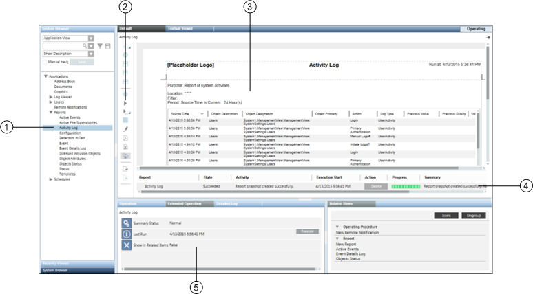

Primary Pane
In the Primary pane, you can view and work with all types of reports and perform activities including, but not limited, to the following:
- Create and configure a Report Definition by:
- Adding various report elements
- Configuring filters
- Applying formatting
- Locate and Modify a Report Definition
- Run a selected Report Definition
- View report execution status, document creation status, and so on during report execution
- Display generated report in Run mode
- View a report as a PDF or XLS
- Export/Import a Report Definition
- Route a report to:
- Folders as files (PDF/XLS)
- Email recipients as a file attachment (PDF/XLS)
- Local printers (PDF only)

| Name | Description |
1 | Report Definition Selection | Location of Report Definition and Report folders in the Application View of System Browser. |
2 | Report Execution | Reports toolbar containing Report Definition execution command icons: Run |
3 | Executed Report Display | Location of executed Report Definition. |
4 | Report Management | Status details of the executed or currently running Report Definition. |
5 | Report Definition Properties | Properties (Last Run, Summary Status, and Show in Related Items) displayed in the Extended Operation tab. |
 or Run As
or Run As .
.